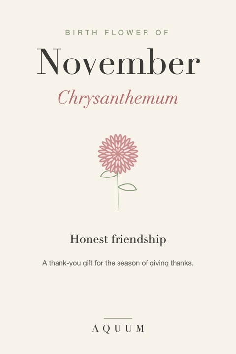

November Birth Flower: Chrysanthemum Meaning and Gift Ideas
2026-09-30
Written by the team behind Aquum, a small birth flower gift shop. How we make money.

November's birth flower is the chrysanthemum, often shortened to "mum." It blooms in the cold weeks when almost nothing else does, which is part of why so many cultures treat it as a symbol of resilience and good fortune.
What the chrysanthemum means
The chrysanthemum stands for honest friendship and good fortune. In the United States it's the flower of autumn porches and Thanksgiving tables; in Japan it's the emblem of the imperial family and a symbol of long life.
Color changes the message:
- Yellow: friendship and warmth
- Red: love and deep affection
- White: honesty and loyalty
- Purple: wishing someone well
One caution: in parts of Europe, white chrysanthemums are associated with funerals. If you're giving to someone with that background, choose yellow or red.
Who the chrysanthemum suits
- A friend born in November you've known for years
- Someone you want to thank: a mentor, a neighbor, a host
- Anyone who would rather not get something Christmassy yet
November birth flower gift ideas
- A chrysanthemum shirt, mug or tote for a gift that outlasts the season.
- A potted mum in their favorite color, with a note about what the color means.
- A thank-you card paired with the gift: November is the one month where saying thank you is built into the calendar.
Because November birthdays sit so close to Thanksgiving, the chrysanthemum lets you do two things at once: celebrate them, and thank them.
Shopping for a November birthday? See our November birthday gift ideas.